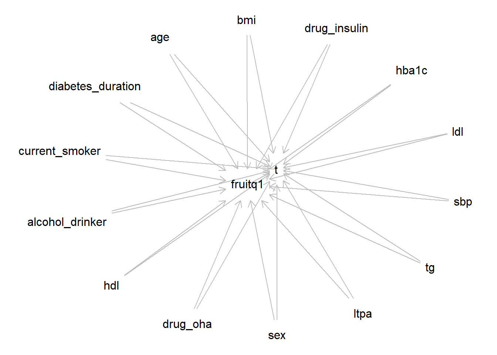

# install.packages("dagitty") #インストールが必要なら実行
library(dagitty)Warning: package 'dagitty' was built under R version 4.4.3out1 <- dagitty("dag {
age -> fruitq1
age -> t
sex -> fruitq1
sex -> t
bmi -> fruitq1
bmi -> t
hba1c -> fruitq1
hba1c -> t
diabetes_duration -> fruitq1
diabetes_duration -> t
drug_oha -> fruitq1
drug_oha -> t
drug_insulin -> fruitq1
drug_insulin -> t
sbp -> fruitq1
sbp -> t
ldl -> fruitq1
ldl -> t
hdl -> fruitq1
hdl -> t
tg -> fruitq1
tg -> t
current_smoker -> fruitq1
current_smoker -> t
alcohol_drinker -> fruitq1
alcohol_drinker -> t
ltpa -> fruitq1
ltpa -> t
fruitq1 -> t
}")
plot(out1)Plot coordinates for graph not supplied! Generating coordinates, see ?coordinates for how to set your own.
out2 <- adjustmentSets(out1, exposure = "fruitq1", outcome = "t")
print(out2){ age, alcohol_drinker, bmi, current_smoker, diabetes_duration,
drug_insulin, drug_oha, hba1c, hdl, ldl, ltpa, sbp, sex, tg }